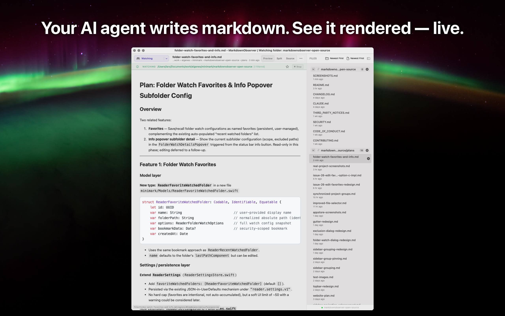
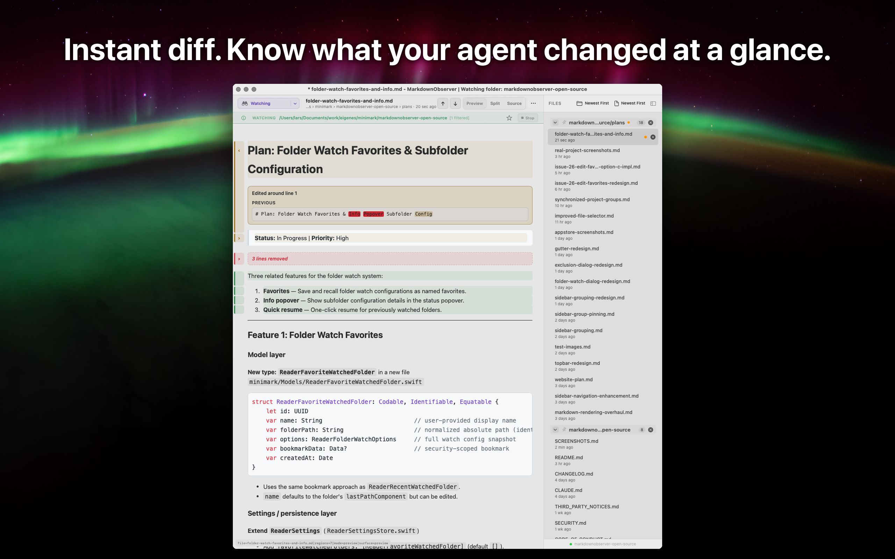
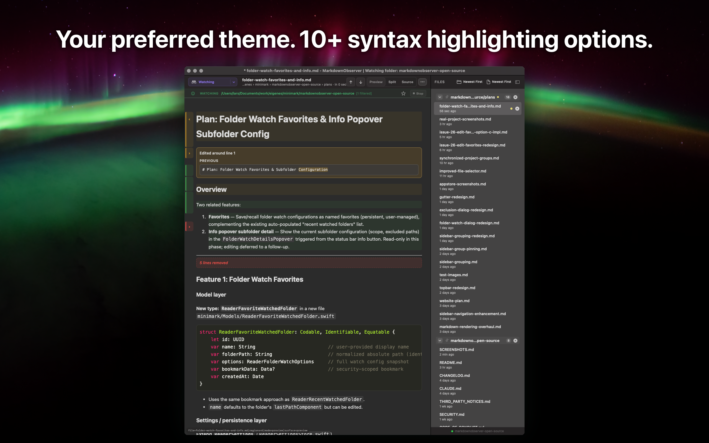
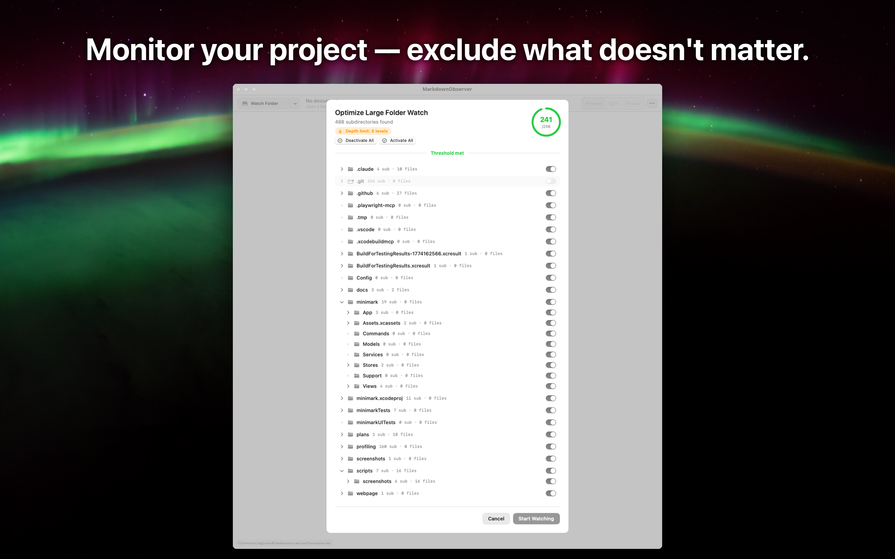
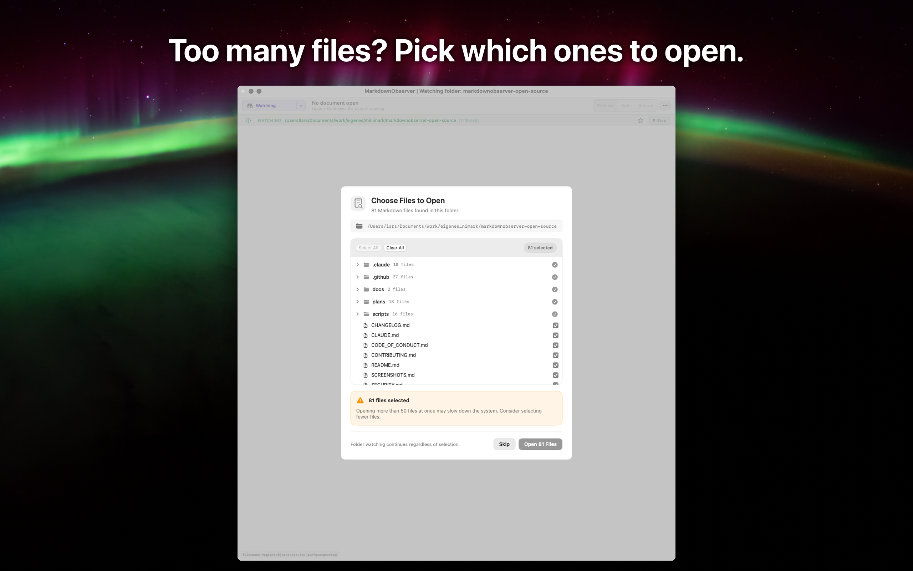
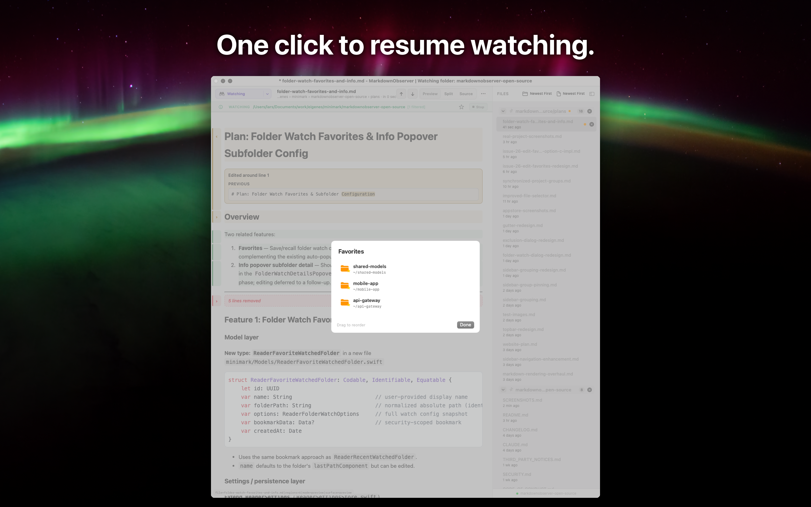

MarkdownObserver
A native macOS Markdown reader.
Open Markdown files, monitor project folders, and inspect live changes without leaving a native macOS workflow.

Built for developer documentation workflows.
Keep a folder under watch while tools or teammates edit markdown. New and changed files appear in context, and change markers highlight exactly what was modified.
See it in action
What it does
Focused on practical markdown workflows for developers.
Markdown Rendering
Render markdown with syntax highlighting, task lists, tables, and code blocks in a native macOS window.
Folder Watch Modes
Watch selected folders or include subfolders, and keep monitoring reliable with event watching plus polling fallback.
Live Diff Tracking
See added, edited, and removed regions with gutter markers and before/after comparison for changed sections.
Sidebar Grouping and Sorting
Group files by subfolder, pin important groups, and sort groups and files independently to match your workflow.
Large Folder File Selection
When a watched folder contains many markdown files, choose exactly which files to open instead of loading everything.
Multi-Document Workspace
Open multiple files at once, route drag-and-drop files to the current window, and resume folder watches from saved favorites.
Screenshots
Live rendered markdown while watching a project folder

Choose which files to open in large folders

Inspect changes with inline diff markers

Switch themes and syntax highlighting styles

Resume watched folders from favorites

Control watched subfolders with exclusion toggles
Open source, MIT licensed.
Built with Swift and SwiftUI.
Rendering runs entirely local — no network calls, no telemetry.